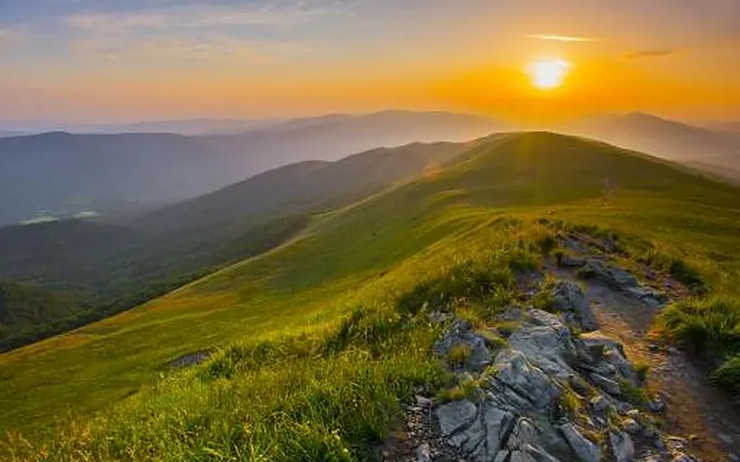
Bieszczady, 3 dni
Połoniny, kolejka wąskotorowa, drezyny rowerowe i ikonopisarstwo.
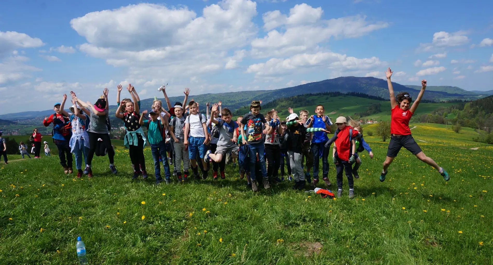
Wycieczki szkolne, wyjazdy dla firm, pielgrzymki i górskie wyprawy z Bochni. Każdy program układamy pod konkretną grupę.
Wybierasz termin, wpisujesz uczestników, akceptujesz umowę i płacisz przelewem albo online. Bez drukowania i skanowania.
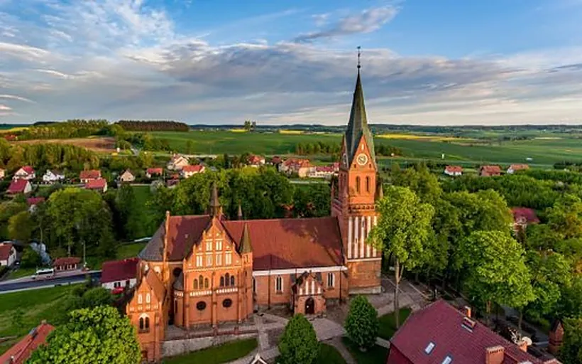
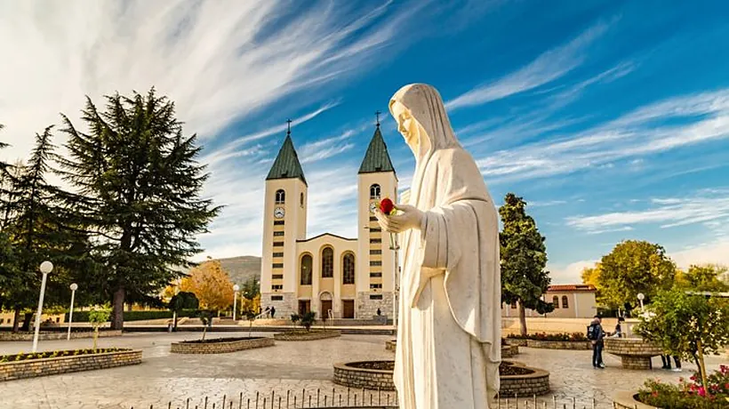
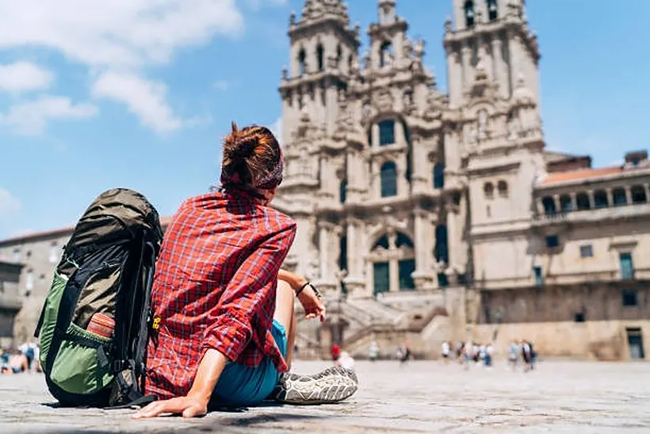
Terminy i ceny z oferty 2026 na obecnej stronie. W podglądzie każda karta otwiera przykładową stronę wyjazdu do Gietrzwałdu z zapisem.
Jesteśmy lokalnym biurem z Bochni. Nie jesteśmy fabryką: dla każdej grupy dobieramy program do jej możliwości i potrzeb.
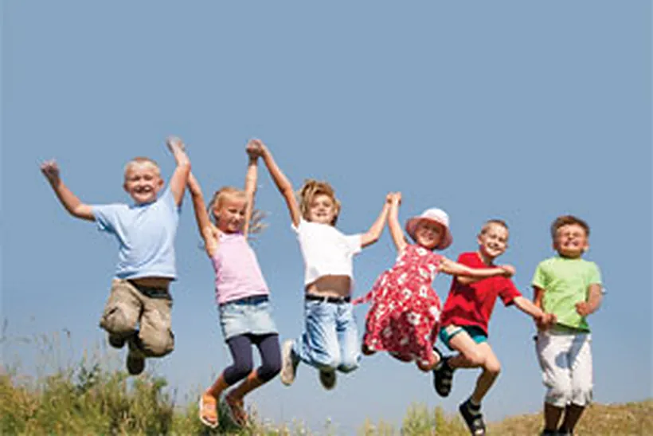
Jednodniowe i wielodniowe, zielone i białe szkoły, warsztaty w szkole.
Oferta dla szkół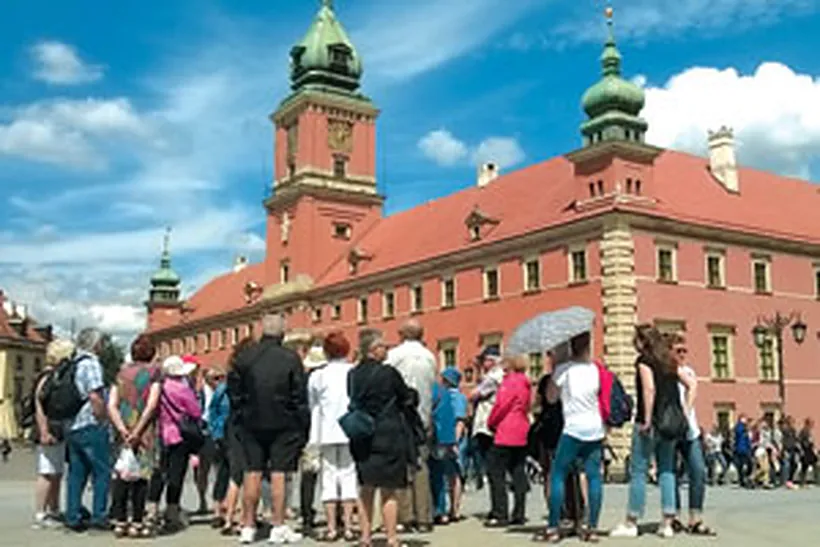
Wycieczki krajowe i zagraniczne, wyjazdy integracyjne.
Zapytaj o programMedjugorie, Włochy, sanktuaria w Polsce. Programy także dla grup parafialnych.
Terminy z zapisami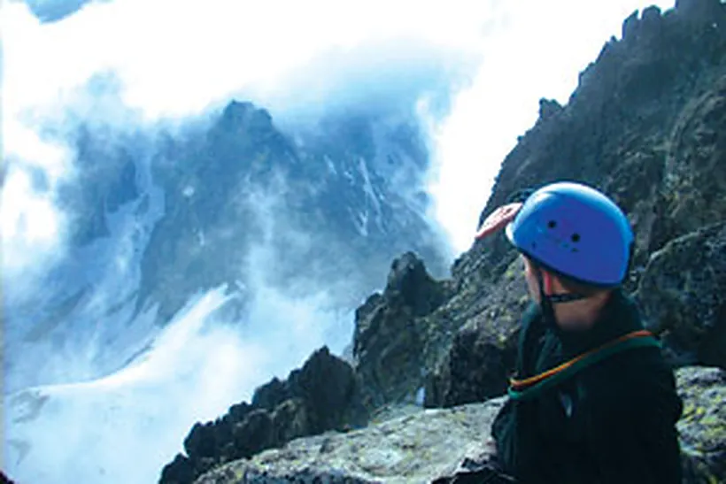
Trekkingi i via ferraty z przewodnikiem górskim.
Dolomity, Norwegia, SzkocjaGotowe programy wycieczek szkolnych, które zmieniamy pod klasę, budżet i liczbę dni. Na życzenie zielona szkoła albo warsztaty.

Połoniny, kolejka wąskotorowa, drezyny rowerowe i ikonopisarstwo.
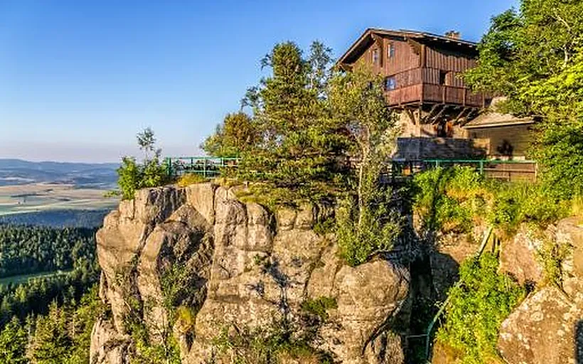
Podziemne i skalne labirynty Kotliny Kłodzkiej.
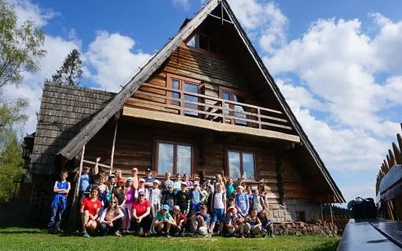
Program 4-dniowy, który skracamy albo rozbudowujemy.
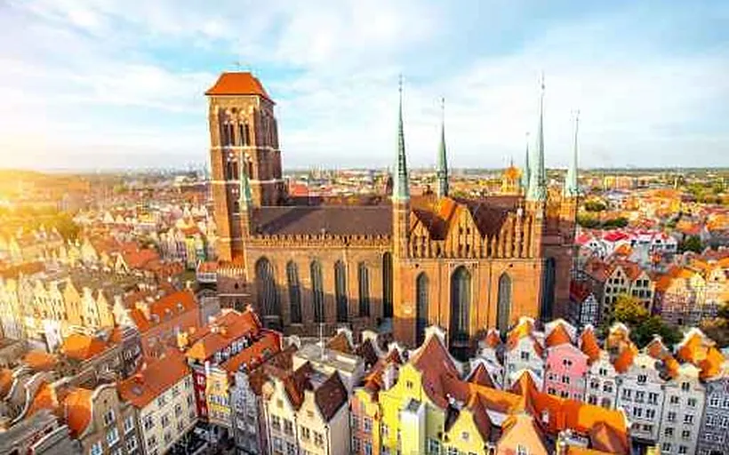
Gdańsk, Gdynia i Sopot. Na dłużej zielona szkoła na Kaszubach.
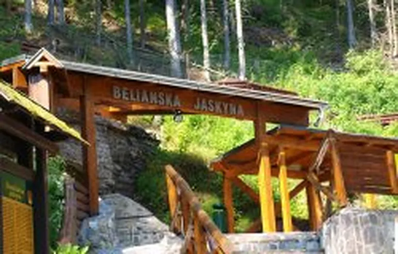
Jednodniowa wycieczka z Bielską Jaskinią.
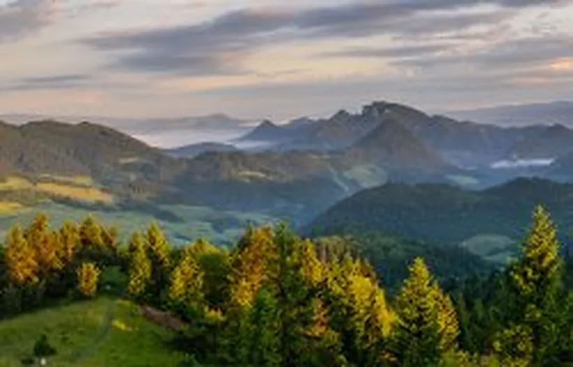
Wycieczka jednodniowa w góry blisko Małopolski.
Pełna lista programów w katalogu wycieczek szkolnych. Poproś o katalog
Prowadzi je Kuba, przewodnik tatrzański i górski UIMLA, instruktor narciarstwa i wspinaczki. Wyprawy realizujemy na zlecenie grupy, po ustaleniu terminu.
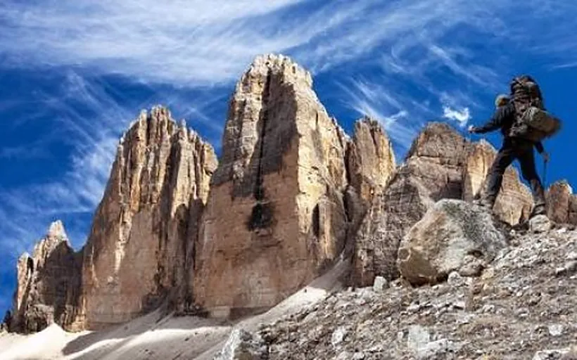
Via ferraty w najpiękniejszych grupach Dolomitów.
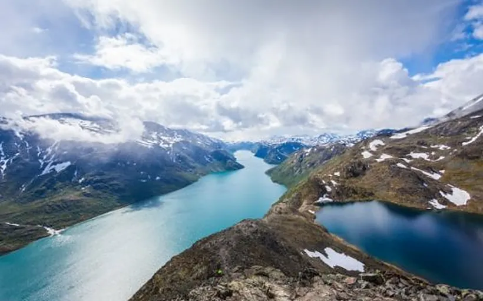
Jotunheimen z granią Besseggen i Galdhøpiggen, Droga Trolli, Geirangerfjord, Język Trolla.
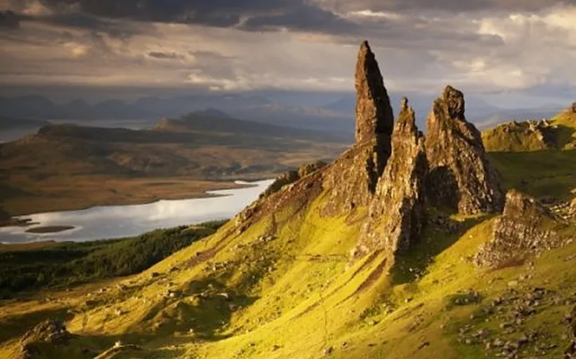
Glen Coe, Ben Nevis i Black Cuillin.
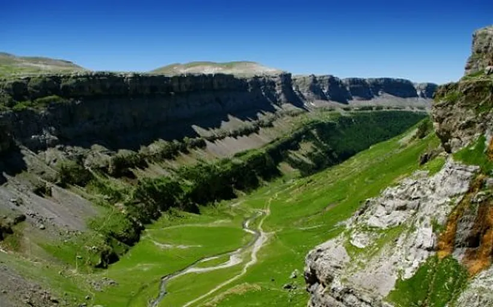
Monte Perdido, Petit Vignemale i Pico de Aneto.
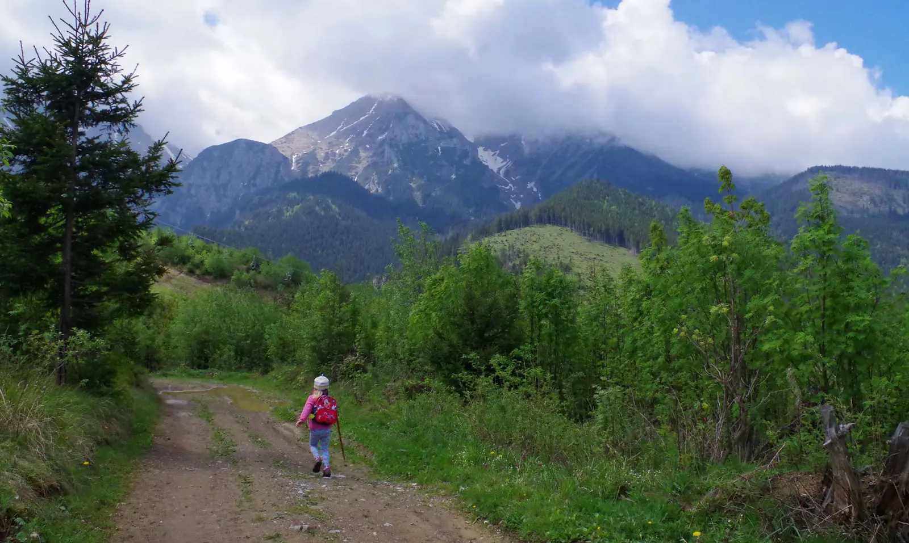
Do każdego wyjazdu podchodzimy tak, jakby to był nasz własny wyjazd.
Z branżą turystyczną jesteśmy związani od ponad 20 lat. Przygotowując plan wyjazdu bierzemy pod uwagę charakter grupy, jej doświadczenie i możliwości. Widzimy detale, które łatwo przeoczyć.
Organizatorka i pilot wycieczek. Kocha góry i podróżowanie w stylu slow travel, dba o najmniejsze szczegóły każdego wyjazdu.
Przewodnik tatrzański i górski UIMLA. Wytycza nowe kierunki i na własnej skórze testuje nowe atrakcje.
Na wybrane wyjazdy zapiszesz się bezpośrednio na stronie, o każdej porze. Na wycieczki dla szkół, firm i parafii przygotowujemy indywidualną ofertę.
Zobacz przykładowy zapisJesteśmy wpisani do rejestru organizatorów turystyki, a każdy wyjazd jest ubezpieczony.